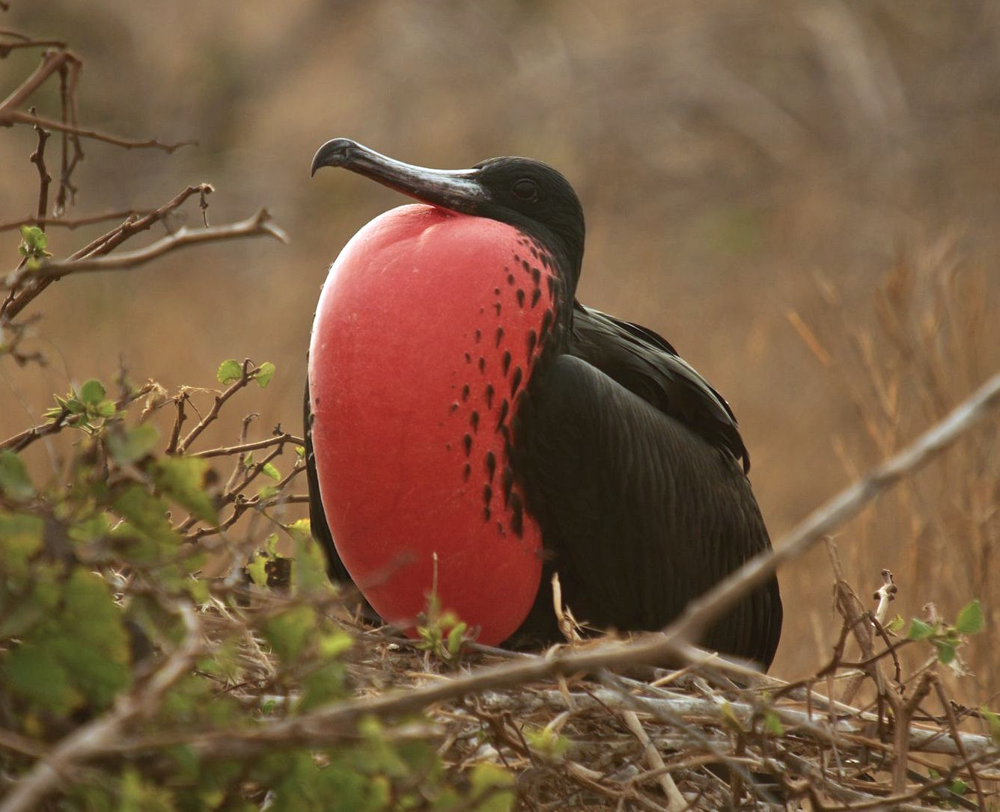

Blog Page
Burning 버닝
Directed in 2018 by Lee Chang-Dong, Burning is a psychological thriller which features actors Steven Yeun, Yooh Ah-in, and Jeon Jong-seo. Yooh plays Jong-su, a down-on-his-luck deliveryman who randomly meets his childhood friend Hae-mi, played by Jong-seo. The two reconnect and develop a sense of trust, so Hae-mi leaves Jong-su to take care of her apartment and cat during a trip to Africa. Hae-mi bonds with a mysterious man, Ben (played by Steven Yeun) after being temporarily stranded at the airport during her return trip. Ben becomes increasingly immersed in their lives, with Hae-mi seemingly mesmerized by his glamorous and wealthy lifestyle, while Jong-su grows increasingly suspicious at some of Ben's activities, including a bi-monthly ritual wherein he burns an abandoned greenhouse. Eventually, Hae-mi disappears along with her cat: just as the South Korean police don't take interest in
the greenhouses Ben burns down, they don't care for Hae-mi's disappearance, as she has no other friends or family, leading Jong-su to take matters into his own hands. Burning is a deeply unsettling movie, particularly during the latter half, where Ben's mysteriously funded high-speed lifestyle contrasts sharply with the mystery surrounding his job, history, and morality. Ben is an enigmatic character, and Steven Yeun masterfully plays the role of a sculking but charismatic siren; a facade of a man which barely conceals a writhing darkness and amorality that occassionally
slithers out from beneath the mask. The movie leaves the audience with more questions than answers, tormenting them to a similar fate as Jong-su. Burning radiates dread and mystery, yet it's a riveting and immersive watch with likable (but flawed) main characters in Jong-su and Hae-mi, and an unknowable force of nature in Ben, which I really enjoyed.
External post: Burning
| Actor | Birthdate | Walking Dead Appearances |
|---|---|---|
| Steven Yeun | 1983 | Glen |
| Yoo Ah-in | 1986 | N/A |
| Jeon Jong-seo | 1994 | N/A |
Magnificent Frigate Bird
The magnificent frigate bird, or the "Man o' War", is one of the fastest birds in the world, capable of reaching speeds up to 95 mph. They're seabirds who typically live in or around warm, tropical regions, and there are some populations who live in the Galapagos Islands, which are famously the site of Charles Darwin's research into evolution and the beginning of his love-hate relationship with barnacles. The magnificent frigate bird has a well-earned name, as they're the largest species of frigatebird, and they have several interesting characteristics. Their flight is silent, they can reach heights of up to 8200ft, and male birds have a red/scarlet throat pouch which is inflated like a balloon during breeding season. Frigate birds are, like a lot of birds, jerks: they will use their superior size to peck at other seabirds, forcing them to spew up their meals and then consuming the regurgitated mess for themselves. While the conservation concern status of the magnificent frigate bird population is very low, evolutionarily distinct populations that exist in the Galapagos Islands and Cape Verde are thought to be extremely low, thus making these particular populations at high risk of extinction.
External post: Frigate Bird
